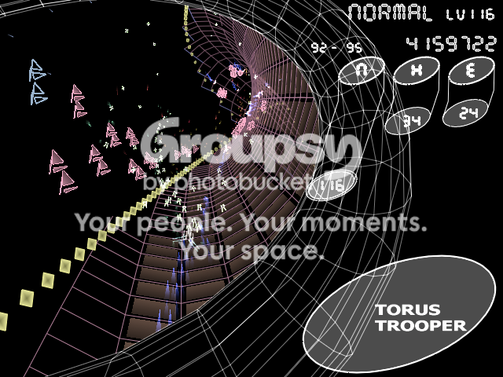

#2198 1 2005-03-12T16:17:01Z Maniac I've recently become quite addicted to one of Kenta Cho's shoot-em-up games. It's called Torus Trooper, and it's pretty fun. You drive a space ship around an infinite torus, and you get to shoot and destroy ships and boss ships.
Windows page
Mac page
Unfortunately, screenshot taking is rather hard, but it's still a really good game.

Looks cool.. i'll play it later
#53874 3 2005-03-12T16:53:49Z Keron Cyst Heh, I've known about this game for quite a while now

Some people have managed to reach Levels over 50
 Speed, speed, speed!!
Speed, speed, speed!! Dash along a huge cylindrical tube, completey random-generated, as you rush through enemies and avoid their projectiles, obliterating them with your Z cannon (which fires more shots with the more speed you pick up), or the X cannon (which is held, and can trigger combos, but slows down your ship heavily)
Sorry, ya can't use 'em both
Every hit takes off time, and there are invisible checkpoints in each level which give you more time. Also, you stumble upon a boss at the end of every half-level who's quite far away and you have to dodge its projectiles for a while, but when you destroy it, you gain either half a min.'s time or 45 second's
Menu

Z Cannon

X Cannon

Menu after I took these shots

#53877 4 2005-03-12T17:23:59Z Maniac Yeah, really fun.
The furthest I've gotten on Normal is Level 25, Hard is 11, I think, and Extreme is 6.
EDIT:
Got Hard and Extreme right, but Normal was really Level 30, and now counting...
#53878 5 2005-03-12T17:37:59Z Keron Cyst The music rocks
No less brilliant than any other from Kenta Cho.
#53880 6 2005-03-12T17:50:33Z nevermore 
What just happened?
That is the craziest game I have ever played. Major epilepsy attack!
#53881 7 2005-03-12T17:51:05Z Maniac Yeah, the music is quite excellent. I just love music in that style.
37 now.
#53885 8 2005-03-12T18:01:37Z Banannakid *adores the music*
I've only tried normal, and I've gotten to level 12. This game is
INSANE!! 
What kills you? I seem more likely to die with I'm in a group of those floaty pink things, but that's all I've noticed. What actually should I be looking out for at speeds above 2000 mph?
#53889 9 2005-03-12T18:24:59Z Maniac It's kph.
And yeah, the pink things are bullets. I haven't been able to tell the difference between triangular ones and square-y ones.
I'm on 50 now, by the way.
Anyone know how to take a screenshot in the Mac version? I need to show you proof.
#53921 10 2005-03-12T21:02:26Z Banannakid I know it's km/h, but mostly for my own benefit, I converted it to mph.
And there's diffrent shapes of bullets? *checks* I think I possibly only need to look out for the triangular ones...
#53937 11 2005-03-12T22:29:03Z Maniac No, you need to look out for both. Otherwise bosses would be harmless.
BTW, I'm on 60 now, but I still can't figure out how to show you a picture of it.
#53940 12 2005-03-12T23:07:00Z Eli I'm on level 8 on normal, 2 on extreme.

OpenGL is truly amazing.
BTW, I once got more than X73 with the X cannon
")
It's really powerful, although it true advantage IMO is its ability to destroy shots.
#53942 13 2005-03-12T23:17:32Z Maniac Yeah.
Also, big deal. 60 on normal, 10 on extreme.
And I've gotten up to the maximum of X100 with the X cannon.
#53943 14 2005-03-12T23:24:15Z Banannakid *rarely uses the X Cannon*
*should use the X cannon more*
Hey, I though the game was insane on normal mode at 3000km/h, but then I play extreme, and reach 7000km/h, and I find myself doing my best to just follow the track.
By the way, is there any kind of pause?
#53945 15 2005-03-12T23:32:38Z Maniac Yeah, press p.
And it's the Z cannon and the X cannon. There's no C cannon.
#53948 16 2005-03-12T23:40:50Z brickman Well, that would certaintly stop him from using it very often.
Seriously, I'm downloading this now.
#53953 17 2005-03-12T23:48:46Z Banannakid *edits post* The C cannon was a typo, I swear!!
And the delicious pause will come in handy, it will.
I think Hard is my favorite difficulty. Not insanely fast, but still exciting.
#53954 18 2005-03-12T23:50:58Z Maniac Good. It's very addictive.
Tell me when you get to Level 65 on Normal like I'm at!
#53957 19 2005-03-12T23:53:09Z Banannakid  Sixty-five?!
Sixty-five?!
 I'm on twelve...
I'm on twelve...#53974 20 2005-03-13T01:50:42Z Keron Cyst Challenge: Try to beat the boss by not destroying it. Touching an enemy does not destroy you. Plus, yeah, the enemy fire patterns are different (well, they're random all the time

) and are more numerous with higher level, and your ship picks up speed faster, too.
... That is the craziest game I have ever played. Major epilepsy attack!
So what?
I don't see how you find it confusing...
#53980 21 2005-03-13T02:51:51Z Banannakid Keron, have you tried it on EXtreme difficulty?
#53984 22 2005-03-13T03:11:39Z nevermore I don't see how you find it confusing..
I don't! It's just the PERFECT game for people with ADD.
I suck at it, so I don't think I even beat a level... I only tried once though, and the first time I didn't even know you could shoot.

#53987 23 2005-03-13T03:35:57Z brickman Whoa, this game is awesome. I'm only playing hard, of course, because once I did I realized I could never go back to the relative slowness of easy. It feels mindless at times and very tricky at others, but for the entire time I have not once found it to stop being awesomely cool. I went up to 7 on easy before trying hard, and have gone to 13 on hard already--in about half in hour, no less, for the hard stuff. I haven't really gotten anything other than death and lost time from the x cannon-when should I use it?
Oh, and:
Hey, I though the game was insane on normal mode at 3000km/h, but then I play extreme, and reach 7000km/h, and I find myself doing my best to just follow the track.
You DO realize its impossible to fall off, right?
#53992 24 2005-03-13T03:52:14Z Keron Cyst Keron, have you tried it on EXtreme difficulty?
Check my screenshot; Level 6. Of course, I only touched
Torus Trooper for a few days
Hasn't anyone tried any of Kenta Cho's other games?

#54010 25 2005-03-13T06:37:43Z Banannakid Hasn't anyone tried any of Kenta Cho's other games?
I have. Torus is the best one, though.
#54013 26 2005-03-13T06:50:41Z Keron Cyst PARSEC47, man
#54039 27 2005-03-13T11:31:43Z Eli Extreme is the best setting. I'm on level 4 now.
EDIT: Level 8 on Extreme now.
#54059 28 2005-03-13T16:17:07Z Eli Level 12 on Extreme. Take that, Maniac!
#54066 29 2005-03-13T19:03:54Z Eli Level 15, and an interesting happening: I had only a few seconds left and I was going against the final boss of level 14. I fired... GAME OVER ... and hit. I proceeded to the next level (though my victory was not recorded

)
#54076 30 2005-03-13T20:51:25Z brickman Easy: 7
Hard: 20
Extreme: 5, but that was from just my first run
This game is awesome every time I play it. The speeds are insane, and I am normally limited to just pure instinct for dodging. And apparently I seem to be pretty darn good. I've made a little bit more use of the x cannon, but I don't find it too handy and it kinda sucks away the fun as fast as it does your speed, so I lay off it except during extremely grim barrages, mostly just for boss ships.
#54111 31 2005-03-14T01:53:19Z Guest Wow, that game's fantastic. I love it. I've gotta go play some more now.
#54128 32 2005-03-14T03:58:09Z brickman Whoa. I just did a 4 level run on extreme, from 5 to 9 (thats four completed, one incomplete), followed by a 6 level run on easy from 7 to 13 (same as above). Seems that, no matter what the difficulty, I always either crash and burn within the first two bosses or traverse several levels before being brought down. I also seem to be MORE comfortable on the faster modes than the slower--not just hard, I mean I actually prefer extreme's speeds. Well, thats what happens when you give the ADD game to an ADD kid.
#54130 33 2005-03-14T04:49:32Z Banannakid That happened to me, too. The normal mode is uncomftorable to me now.
#54139 34 2005-03-14T11:00:04Z Eli 1) Why doesn't it record me winning level 15 in extreme mode?
2) Where/Can I get Kenta Cho's other games for Mac?
#54140 35 2005-03-14T11:19:03Z iangb Absolutely ace. The only game I've played before that even comes close to this in terms of mind-numbing speeeeeed is rollcage II. But even in that game with the fastest car and super-fast cheats isn't as good as extreme mode. Wow. Does kenta cho have a homepage?
#54143 36 2005-03-14T11:58:36Z Maniac Sure does. Check the windows link, then go to the main site.
Playing more now...
BTW, eventually you face multiple bosses for one bonus. On levels like 65 it's not uncommon to face 3 or 4 bosses at once.
EDIT:
15 on extreme. However, I aborted my game upon reaching it, and was taken back to the main menu where I could only start from 10 again. Sounds like a bug I should report.
#54163 37 2005-03-14T20:38:03Z Eli 15 on extreme. However, I aborted my game upon reaching it, and was taken back to the main menu where I could only start from 10 again. Sounds like a bug I should report.
Yeah, I consistently have a similar bug: It won't record my victories past level 15.
Also, where/can I get Kenta Cho's other games for Mac?
#54168 38 2005-03-14T21:29:50Z brickman Whoa, I just made a huge extreme mode run, from 11 all the way up to 16. And it stuck too, to those saying it won't record passing 15. That was just. . . amazing. And of course, I used the x cannon a total of 0 times.
Its weird how skill in this game works. You first play it, and it seems entirely mindless. But for every level you pass, you begin slowly gaining skill and technique, but the funny thing is, when you get to the end of your 5 level run that looked impossible you have NO IDEA how you did it. I mean, you knew what you were doing, but the strategy springs up when you're using it and then just vanishes. I mean, I just did mine, and yet I can't tell you what I did to weave through the boss shots, just that I did, did well, and can do well next time. I don't think I've ever experienced a game where I couldn't put the strategy into words (some where those words would fill a novel, but always some ammount of words). You just either have it or don't.
BTW, is anyone else surprised by how this thing never lags? N lags even when its the only thing open sometimes, and the most complicated n level can't hold a candle to one boss fight here in terms of excuse for lagging, yet I have never seen TT lag.
#54169 39 2005-03-14T21:40:24Z Maniac Well... TT was written in D, whereas N was in Flash...
#54170 40 2005-03-14T21:57:29Z Eli Also, where/can I get Kenta Cho's other games for Mac?
Besides that... TT also uses OpenGL. OpenGL is great.
#54176 41 2005-03-14T23:10:05Z Eli I just got to level 10 in Hard using my 'never firing' strategy. (I do fire against bosses...)
#54179 42 2005-03-14T23:24:38Z syntax Am I missing something ?
Played and got from 1-7 on easy and *then* realised I could accelerate.
Read the rules.
Booted up in extreme mode and basically:
Kept accelerating while Z firing.
Kept pressing left until I hit a wall then keep heading right.
And vice-versa.
I hit 15000 odd speed-wise and just couldn't see anything.
There's no way I dodged/killed everything for *8* levels!
I eventually just ran out of time... maybe I was overtaking the bosses or something. And passing through everything. Had a few +30s possibly but no crashes.
Every time I play I just seem to hit flat out really quick so I've started trying to use the X cannon to slow myself down which works a bit.
Wonder if it's something to do with machine spec ? Got a pretty powerful server running it so maybe that's it...
Weird... but good game

I'll report back when I know what's going on
#54184 43 2005-03-15T00:28:53Z Maniac How'd that happen?
In any case, you're supposed to die if you get much higher than 6,000, because then you're going so fast that it's nearly impossible to dodge shots.
#54187 44 2005-03-15T01:19:51Z brickman Apparently, somethings seriously messed up with his game. Try redownloading it, and if that doesn't work, I guess you're stuck.
#54237 45 2005-03-15T11:39:49Z Eli Yeah, I reached level 12 on Hard with 'no firing', and I'm stuck at 11.
#54257 46 2005-03-15T15:51:05Z Keron Cyst ... You guys are insane
#54287 47 2005-03-15T21:21:13Z Maniac Nah, just persistent.
#54305 48 2005-03-15T21:53:54Z Eli I've never taken more than four tries to beat a level here.
I just got TUMIKI Fighters, though... it's really hard!
#54306 49 2005-03-15T22:05:24Z nevermore Oh man. I didn't even know there was an X cannon until about 30 seconds ago... lol.
#54328 50 2005-03-16T00:03:13Z syntax In any case, you're supposed to die if you get much higher than 6,000, because then you're going so fast that it's nearly impossible to dodge shots.
I haven't had much time to play since Saturday (doing 16 hours shifts at the moment), but just had a go. I did keep dying at around 5K but once I reached 10K I was ok...
Just keep swerving... try it. As long as you don't stick to a wall too long you never die. Done 6 extreme levels in a row before running out of time...
Either that or I've got some weird power...
Hmm... I like that idea
#54331 51 2005-03-16T00:08:47Z Keron Cyst ... I just got TUMIKI Fighters... it's really hard!
I've never gotten past Level 3
#54338 52 2005-03-16T00:30:14Z syntax Got to level 2 I think.
Hated that game so much I uninstalled it !

#54410 53 2005-03-16T15:55:42Z Keron Cyst Why? It's brilliant
#54412 54 2005-03-16T16:53:17Z iangb syntax's problem - I do that as well. Most of the ships fire at you, so if you keep moving then most of them miss you. I've only got up to 10,000 speed though - I keep hitting walls.
TUMIKI Fighters: downloading it now... looks fun.
EDIT: got it: it's pretty cool. I did a test run and beat level one first try. It's not that hard!
#54413 55 2005-03-16T17:00:46Z Lucidium I managed to stay around 10k for quite a while just now, mostly just lucking out I think. Am I just seeing things, or does shooting ships down speed you up?
#54414 56 2005-03-16T17:05:45Z iangb Um, sometimes. There's a set maximum speed when you are fighting a boss - what it is depends on the game type. I do know what you mean, but I think that it's either that I killed a boss without realising it, or that I was hitting a wall, which slows you down.
Oh, and lagging: It Never happens. I took it into school to try it on the rubbish CPUs there and all I got was a minor drop in frame rate. Coo.
#54430 57 2005-03-16T20:43:47Z Keron Cyst ... TUMIKI Fighters:... it's pretty cool. I... beat level one first try. It's not that hard!
That's 'cuz it's only level one...
#54542 58 2005-03-17T18:13:11Z iangb I've got to level 3 now, but I haven't been playing on it much. Mainly coz I'm trying to get tri4lmaniac off of his high-score omnipotence. Not much luck as yet, but I am slowly appearing in low rankings...
#54822 59 2005-03-19T17:55:29Z syntax Just to confirm that "Torus Trooper" does register past level 15 on extreme...
Just reached level 23 starting from level 1...
Maybe it won't register past 15 unless you're doing a run of several levels ?
#55071 60 2005-03-20T22:29:27Z Maniac Level 70. #55086 61 2005-03-20T23:25:04Z brickman My computer won't let me play anymore. It'll go just fine until I have to actually start shooting, but as soon as I start holding down z the game shrinks (without pausing), and is hard to get back up (which is not uncommon), and then if I start shooting again it'll shrink again. . . :Freak:
If only I could resaaign the key.
#55087 62 2005-03-20T23:28:29Z Maniac Well, you need to reassign the shrink key then.
EDIT:
Also, 71, just to make sure this isn't spam.
#55090 63 2005-03-20T23:32:12Z brickman But I never assigned the shrink key to z. I didn't make any changes when it started messing up. I didn't even know there WAS a shrink key. If z is the shrink key, how can I do this? zzzzzzzzzzzzzzzzzzzzzzzzzzzzzzzzzz.
#55093 64 2005-03-20T23:34:49Z Maniac Well, for starters, you could have done one of two things:
- You could have typed each z in quick succession.
- You could have still been typing while it was shrunk. You can't pause N by minimizing it, ya know.
#55119 65 2005-03-21T01:32:26Z Keron Cyst *lol* it's called "multi-tasking," not "shrinking"
Hold [ALT] + Tab for the standard multi-tasking method.
#55120 66 2005-03-21T01:38:20Z brickman Nope, I'm pretty sure its called shrinking. Example: I start running a virus scan, and open Firefox in front of that. Thats multitasking. I click the minus button on the virus scan and its visual representation collapses into just the icon on the bottom of the screen. Thats shrinking, even even if its still running.
#55123 67 2005-03-21T01:55:50Z Maniac Yeah, I can do that on my computer too, only not by key, only by button. Very useful, it seems.
#55205 68 2005-03-21T19:44:08Z syntax "Minimizing" ?
Anyways Maniac... 71 ? on Extreme ?
I'm on 27 Extreme now but thought I'd ask...
#55226 69 2005-03-22T01:01:40Z Lucidium Obviously getting through the levels is not a challenge for you guys.
Why not try and get high scores instead?
#55227 70 2005-03-22T01:40:22Z Maniac No, 71 on normal...
Extreme has problems with saving, apparently, I'm just on 15 on Extreme. It didn't save it, though.
#55437 71 2005-03-23T00:27:16Z Keron Cyst The default method for file-minimizing on Windows is Windows Key + M or D...
#55611 72 2005-03-24T00:23:34Z Maniac Huh.
By the way, N74, H26, E18.
#55732 73 2005-03-24T12:26:10Z iangb I'm gaining on you... got to 75 on Normal
BTW, what's your longest 'chain' of levels? (if you select the difficulty then it appears somewhere) I have 1-12 on N, 1-8 on H and 1-6 on E
Edit: levels...
Normal = 76
Hard = 13
Extreme = 19
#57106 74 2005-03-30T11:51:30Z Maniac Hard I'm way ahead of you on... 30 something.
I'm gonna catch up to you!
EDIT:
N78 H32 E18
#71796 75 2005-06-02T19:00:44Z kai go, maniac, go!!!
#71804 76 2005-06-02T20:10:26Z Maniac That was kinda useless.
However, thanks for reminding me to play it.
#71805 77 2005-06-02T20:21:35Z iangb and me...
The game is still on...
N - 92
H - 15
E - 22
#71839 78 2005-06-02T21:49:41Z Maniac AIEE!
N82 H34 E18
EDIT:
N86 H34 E19
EDIT #2:
N93 H34 E19
#72087 79 2005-06-04T00:24:58Z Maniac *bump*
Oh, iangb...
N:
102
H: 34
E: 19
#72089 80 2005-06-04T00:38:23Z kai That was kinda useless.
However, thanks for reminding me to play it.
lol
edit:102?!! jesus u have alot of time on ur hands...
#72092 81 2005-06-04T00:49:24Z nevermore Erk... So was that, Kai.
#72095 82 2005-06-04T00:54:27Z Maniac Yes, level one hundred and two. At first, I was afraid Kenta Cho hadn't programmed in the triple-digit capacity, but I was pleasantly rewarded with my passing into triple digits.
Also, I hope he coded it in so that when the column slants into the bottom it kinda turns to start heading left, so you can still see your progress. But I'll have to play a lot before I see if he did that.
#73248 83 2005-06-08T16:12:31Z iangb Read and weep.
N-111
H-17
E-24
That right. Eleventy-one.
#73250 84 2005-06-08T16:17:15Z Maniac #73252 85 2005-06-08T16:22:00Z iangb not for long...
*cracks knuckles*
#73496 86 2005-06-09T18:51:38Z Maniac N: 114
H: 34
E: 18
*smacks iangb*
#73545 87 2005-06-09T20:56:57Z brickman Out of curiosity, does it ever give you three or more bosses at once? Because I know it gives two after a dozen or so levels (depending on the difficulty).
#73563 88 2005-06-09T21:12:58Z iangb I've had 4 (or maybe 5) at a time. But some of the individual bosses have had sort of drone things circling them and also firing at you. It's good that way, mind you - you can ramp up points and get another 15 seconds easilly.
#73622 89 2005-06-09T22:36:11Z Maniac Yes. I occasionally have 4 or 5. It works this way:
First boss - regular boss. Can be 1, or 2, or 3, or 4, or sometimes even 5.
Second boss - drone boss. There is always only one, but there can be two, five, or seven drones(I think).
Also, Normal requires you to destroy 100 ships in the first half of the level. This means that if there's 1 boss, you'll destroy 99 little ships to get there, if 4, only 96 little ships. Then another 99 little ships and 1 drone boss ship.
Hard works the same way, only 160 ships in the first half of the level. And Extreme is 250 ships in the 1st half.
#73632 90 2005-06-09T23:47:56Z Keron Cyst Some shoot-em-up fanatics have reached the thousands (URL moved, and I can't find it

).
#73635 91 2005-06-09T23:59:19Z Maniac 
So, do the slants move off the screen, or did Cho figure out a way to keep the progress?
#73661 92 2005-06-10T04:54:38Z Keron Cyst #73710 93 2005-06-10T14:20:14Z Maniac See the main screen? You have the N for normal. Then, when you get to 2, you have that cell below it. Then, as you progress further, the cell inches down to the left slightly. This is really noticeable when you have about 30 levels completed.
Now, I would think that at about level 250, unless the cells started inching to the left, you would be off the screen.
#73712 94 2005-06-10T14:28:59Z iangb like this. Like my score?

#73714 95 2005-06-10T14:33:32Z astro Why didn't someone tell me the game looked that cool? I've gotta get it!
#73716 96 2005-06-10T14:41:02Z brickman Heh, thats an awesome screenshot BTW. By which I mean that if I had to try to make a screenshot of the game for a site or something (which most people almost always screw up, no matter what game) thats what I would use.
And I think it looks like its supposed to imitate the tunnel, so I expect it to turn slightly a few more times.
#73718 97 2005-06-10T14:46:09Z trib4lmaniac Why didn't someone tell me the game looked that cool? I've gotta get it!
All the Kenta Cho games look similarly cool.
#73723 98 2005-06-10T15:10:35Z Maniac Curse you Ian Braim!

#73724 99 2005-06-10T15:12:54Z brickman Hmm, I think I may want to try some of his other games, but the link in the first post is broken. . .
#73725 100 2005-06-10T15:15:04Z Maniac They both work for me...
#73726 101 2005-06-10T15:15:37Z astro Just do a I'm Feeling Lucky on "kenta cho" (or type it in the ff address bar). It's
http://www.asahi-net.or.jp/~cs8k-cyu/index_e.html, btw.
#73741 102 2005-06-10T17:33:58Z brickman Whoa, I just downloaded them all. First I tried was rRootage, and that thing is COOL (and more than a bit reminiscent of a certain other top-down shooter that appeared on the forum). I wouldn't have expected anything else from the maker of Torus Trooper, this thing is pure awesomeness (so far I've tried it on normal and ika mode). I'm not sure that saying that any one of his games is hands down his BEST is a statement that can be backed up.
#73745 103 2005-06-10T18:09:23Z iangb I went and got a few aswell, now that I have broadband. Torus Trooper is my fav, so far, but I haven't played on any of the others as much.
#73761 104 2005-06-10T18:58:25Z Maniac N - 118
H - 35
E - 20
#73968 105 2005-06-11T15:16:10Z Maniac N - 121
H - 39
E - 21

#74403 106 2005-06-13T09:55:29Z iangb N-123
H-35
E-24
Ooohhhh....
You wanna challenge me at rRootage/Parsec47 aswell? They are both great fun.
Edit: make that
N-125
H-40
E-25
Looks like I'm winning again.
#74435 107 2005-06-13T13:51:47Z brickman For some reason my computer hates Kenta Cho's games with a passion. Every time I run one, ANY of them, it is automatically shrunk by the computer after about 5-10 seconds, and half the time it is shrunk again the first time I hit z (which is usually the shoot key). But its worst for Tumiki Fighters-I'm yet to get that to stay unshrunk for more than 3 seconds at a time, because it ALWAYS reshrinks. I can usually muscle through this nonsense for all of them except Tumiki, though. Anyone have a clue whats wrong?
#74466 108 2005-06-13T17:05:45Z iangb It might be that you don't have the drivers used for processing bullets, or there is a glitch in your drivers. I think it uses OpenGL to make the bullets, but it should tell you more on the website/the readme.
Other than that, I'm stumped.
#74516 109 2005-06-13T20:43:54Z Maniac N - 127
H - 43
E - 21
#74688 110 2005-06-14T12:47:34Z iangb N-135
H-43
E-27
#74779 111 2005-06-14T20:55:46Z Maniac Um, you do realise that, unless one of us quits, this competition will go on forever and ever and ever...
#74781 112 2005-06-14T21:06:12Z kai it'll be like a never ending tradition
keep going, i say, u may break a world record

edit: 100th post!!!! yeayaa!!!
#74806 113 2005-06-14T22:44:09Z brickman Um, you do realise that, unless one of us quits, this competition will go on forever and ever and ever...
Isn't that the point?
#74890 114 2005-06-15T09:25:49Z iangb Yup. But hey, I like the game, so whatever...
*geek*
#76108 115 2005-06-18T15:33:16Z Maniac N: 129
H: 52
E: 22
Your turn.
EDIT:
N: 132
H: 54
E: 24
#76535 116 2005-06-19T20:18:38Z iangb I was already beating you. Sorry!
N-138
H-46
E-26
#76544 117 2005-06-19T20:47:31Z Maniac
You still have to work on hard.
#76583 118 2005-06-20T01:42:42Z Maniac *bump*
N - 145
H - 55
E - 25
*nudge nudge poke poke*
#76991 119 2005-06-21T14:47:34Z iangb N-150
H-52
E-31
*nudge nudge wink wink*
#77793 120 2005-06-23T19:25:00Z Maniac N - 156
H - 63
E - 25

#77988 121 2005-06-24T13:26:55Z astro Isn't this just a way for you guys to accumulate postcount?
EDIT: Ironically, that was my 900th post.
#78066 122 2005-06-24T17:36:52Z iangb I wondered how long it would be before someone asked that...
No - it's about 3 posts per week, maximum - not the most likely to make a significant change to our counts. But if you really think we shouldn't then I guess we could just edit the same post, over and over... Maniac?
#78070 123 2005-06-24T17:45:57Z Maniac Yeah, but if we edited our posts, it wouldn't show up as an "active topic" or "last posted in" thing.
Plus, you could go ahead and play and post too maybe.
#78130 124 2005-06-24T19:55:11Z brickman Yeah, the time they spend beating each level is longer than would be worth it if they were just trying to get past me and nevermore.
#78132 125 2005-06-24T19:57:41Z Maniac *pokes Brickman in the eye for forgeting Kablizzy*
Anyway, um, I have time for both. I'm only just behind you anyway.
#78147 126 2005-06-24T20:21:27Z brickman I'm not even sure I want to risk replying to that, but I feel I have to just to point out how close you just came to doing something really stupid.
#78157 127 2005-06-24T20:48:47Z Maniac Yep. Which is exactly why I took care to include that first part there. Kablizzy might not be active, but he can still be insulted with you completely forgetting about him
Anyway, I'll shut up and play the game now.
#78601 128 2005-06-26T06:16:59Z astro This game is flucking hard... I'm at 2 on N.
Time consuming is probably a better word than hard, actually.
#79182 129 2005-06-28T10:34:18Z glenno14 well from reading these comments the game sounds amazing! Time to download yet another game!
#79235 130 2005-06-28T15:09:44Z Maniac Yeah. Besides, it's free! So there's no reason not to!
#79291 131 2005-06-28T18:27:05Z glenno14 well i played it for a while but how did you get such a high level! I got to level 4! And I kept finishing each level with like 1 second left! How are you so good!?
#79292 132 2005-06-28T18:29:18Z Maniac It's simple, really - don't die
#79421 133 2005-06-29T01:17:06Z brickman Rule #1: never let go of the accelerator
Rule #2: never let go of primary fire
Rule #3: strafe as much as possible. That'll increase your odds quite a bit, and at good speeds you'll kill small enemies even on the other side of the tunnel
Rule #4: you may, if absolutely necessary, break the first two rules if you wish to use the secondary weapon (X cannon). However, I don't suggest doing this until you're a high enough level to start having HUGE volleys of bullets that you don't know you can dodge.
#79487 134 2005-06-29T09:40:27Z iangb Accelerate as much as possible. But use the X cannon to slow yourself down if you have too many bullets coming at you, and remember that each enemy bullet you shoot with the X cannon gives you points, which (when you get enough) means that you get another 15 seconds bonus time.
Strafe as much as possible - the triangular bullets all aim for where you will be if you don't move sideways at all, so if you strafe lots then you will almost never be hit by one of them.
I think that that's it...
#79501 135 2005-06-29T10:48:10Z astro Pfft. rRootage is waaay more fun than Torus Trooper.
#79502 136 2005-06-29T10:51:02Z iangb rRootage is great fun, actually. But I just found it a bit... dull. It's beautifull, but it's either stupidly easy or impossible. That doesn't stop me playing it, of course...
EDIT: BTW,
N-160
H-64
E-33

edited so I don't scare Maniac too much.
#79684 137 2005-06-29T19:48:34Z Maniac H - 164?!? I'm sure you meant 64.
N - 180
H - 65
E - 25
#79814 138 2005-06-30T02:30:40Z brickman Rootage is so much fun. how can you say the difficulty is unbalanced? Are you trying to play down the columns instead of rows out of n-induced habit?
#79929 139 2005-06-30T14:26:51Z iangb No, but if you look at the last few levels it is definetly more luck than skill as to wheather you survive or not. And allthough skill can be improved as you play the game more and more, I doubt whether anyone has that fast reactions.
#79938 140 2005-06-30T14:54:21Z Maniac Haven't played it, I'm too busy keeping Ian off my back on TT.
Also, 500th post, Sukian.
#79945 141 2005-06-30T15:09:38Z brickman Well, I think that those levels aren't intended for most people to beat. But hey, if you played it enough times you would know exactly what he's going to do and then its not AS much reflexes as brainpower. And it helps that when you hold the cursor over a level it shows you the attack power of one of its bosses. But really, I think that if you had a good enough grasp of how everything worked, such as the specific part of a shot that has to hit a specific part of you to score a hit, and used your defensive ability well, you could probably do it. Heck, looking at it on the menu, most of those attacks are definitely possible to squeeze past.
But to say its always too easy or hard is silly. Just because the last level is hard and the first is pretty easy doesn't mean there can't be any inbetween that are the right level.
#79957 142 2005-06-30T15:35:33Z iangb Fine, fine. But I still prefer TT.
Don't get me wrong though, I still enjoy rRootage.
Wow. 500 is mine! Now I need 2500 more...
#79969 143 2005-06-30T16:03:58Z Maniac Do you mean 4500?
#80223 144 2005-07-01T13:49:26Z iangb I meant 2500 - to catch up with you and Brickman and Nevermore and Kablizzy.
But 4500 is my secondary goal.
#80258 145 2005-07-01T15:04:47Z Maniac Oh. Yeah. I think I'll probably get to 5,000 before you get to 3,000.
Unless the next title isn't at 5,000...

So, anyway, are you going to attempt to beat me, or have I finally won the Torus Trooper battle?
#80659 146 2005-07-02T22:09:11Z Maniac Hey, Iangb! While you were spending time not playing Torus Trooper, I was... erm... playing Torus Trooper.
N - 195
H - 75
E - 30
Yep. Major improvements on all three difficulties.
#80682 147 2005-07-03T00:50:59Z glenno14 gasp a moderator double posted!!!!im only on level 15 on torus trooper lol
#80684 148 2005-07-03T01:11:06Z astro Let's strip Maniac of his moderator sash!
*strips*
err... *strips Maniac of sash*
#80686 149 2005-07-03T01:13:45Z glenno14 ok im at level 25 now....

uhh oops wrong image....

#80809 150 2005-07-03T12:12:15Z iangb Huh. I was building up my score so you could have a fun week catching up while I was on holiday. Oh well. I'm mostly ahead.
N-200 (hahahahaha)
H-70 (doh)
E-36 (just winning)
#80832 151 2005-07-03T15:09:35Z Maniac Grr... I was going to go all the way to 200 so I could freak you out! Oh well. Time for you to ride the PAAAAAIN TRAAAAAIN!
#80842 152 2005-07-03T16:24:31Z glenno14 im on level 30 now....im catching up!
#80851 153 2005-07-03T17:19:02Z Maniac Normal?
BTW, I've already beaten Iangb everywhere, now I'm trying to get as much of a lead as possible.
N - 201
H - 75
E - 35
Something like that. Regardless, it'll be more by the end of tomorrow.
#80868 154 2005-07-03T18:14:54Z glenno14 yeah im on level 30 on normal.... im gonna play it now...
#80906 155 2005-07-03T22:52:02Z glenno14 level 40 now.
ahhhh! sorry about the double post! dont eat me!
#80912 156 2005-07-03T23:21:25Z Maniac Fine. *partially eats glenno*
I don't particularly have time for TT right now, but I'll advance my progress a little later.
Keep going, you're doing great. And you can play Hard or Extreme modes too, ya know.
#80915 157 2005-07-03T23:49:02Z glenno14 isnt ian away for a while? maybe i can play tt non-stop and get to a higher level than him >:-P
#80918 158 2005-07-03T23:54:15Z Maniac Nah. You won't be able to get to Level 200 in one week.
#80920 159 2005-07-03T23:55:27Z glenno14 i can always try....
#80924 160 2005-07-04T00:22:25Z Maniac N - 205
H - 80
E - 35
#80980 161 2005-07-04T11:57:31Z glenno14 well uhh im on 44 cause i had to go to bed last night while i was playing..... i havent really thought about playing hard and extreme....is there much difference?
#80983 162 2005-07-04T12:44:15Z Maniac Hard gives you 320 total ships to destroy in one level instead of 200, and you gain speed much faster. Average Hard speed is around 4000 to 4250 kph. Extreme gives you 500 total ships to destroy in one level instead of 200, and you gain speed really quickly. Average Extreme speed is 6000 to 6500 kph.
So, yeah, Hard and Extreme are, well, harder.
#80986 163 2005-07-04T12:53:37Z glenno14 i see.....well i know im not gonna get to 200 in a week

but im on level 50 now.....
#80987 164 2005-07-04T12:56:03Z Maniac Nice going. BTW, just to let you know, Keron says that some shoot-em-up lunatics have managed to reach the thousands.

#80990 165 2005-07-04T13:04:20Z glenno14 yep i read that....i wonder how long they've been playing! damn torus trooper addicts.....
#81007 166 2005-07-04T14:42:23Z brickman Hard gives you 320 total ships to destroy in one level instead of 200, and you gain speed much faster. Average Hard speed is around 4000 to 4250 kph. Extreme gives you 500 total ships to destroy in one level instead of 200, and you gain speed really quickly. Average Extreme speed is 6000 to 6500 kph.
So, yeah, Hard and Extreme are, well, harder.
You forgot to mention that the whole "the faster you move, the more you shoot" thing s altered proportional to the speed alteration, so being at a certain portion of the hard mode max speed gives the same offensive power as being at that portion of the easy max speed (if it didn't, those modes would be easier because by the time you reached 4000 or 6000 nothing would even be able to make it on screen).
#81044 167 2005-07-04T16:58:37Z Maniac Oh yeah, that. I forgot. Yes, in Extreme mode you don't get to cover the screen with bullets.
#81061 168 2005-07-04T18:55:13Z brickman Well, you do, but you sort of have to choose whether you feel that covering the screen in bullets or being able to see whats in front of you while its still in front of you is more important.
#81121 169 2005-07-05T00:09:42Z Maniac Yeah, but you can still kinda see...
N - 215
H - 85
E - 35
#81126 170 2005-07-05T00:23:12Z brickman That was sarcasm. You won't be able to react to anything at 7500 or whatever the max is.
#81133 171 2005-07-05T00:33:46Z Maniac There isn't a max. Syntax has gotten to about 10,000, but eventually you hit walls and slow down.
Anyway, um, yeah, Extreme is still really difficult, because you eventually have to dodge a whole bunch of junk while having only about a tenth of a second to react. No wonder I've only gotten to level 35!
#81429 172 2005-07-06T08:22:51Z astro Is it fair for you to be playing Torus Trooper while iangb is away?
#81984 173 2005-07-08T18:03:14Z Maniac 
Yes.
#83223 174 2005-07-13T15:26:27Z iangb I'm back. Let battle commence!
N - 223
H - 85
E - 37
#83228 175 2005-07-13T16:18:04Z Maniac Engarde! Um... erm...
*sits down*
#83266 176 2005-07-13T18:54:43Z kai geez, how many hours a day do u spend on tt?!
#83273 177 2005-07-13T19:17:35Z Maniac Many, though for a while I wasn't playing. But the lure of competition will bring my hours back up to the norm
#86258 178 2005-07-26T22:16:02Z monkey_man_5 (guest) wok!its cool!it has you throwing...balls...yeah.
check it out!
#86259 179 2005-07-26T22:17:53Z Guest (guest) *covers mouth*sorry!why must i revive so much!?necromacer me!i am sorry!
.and sorry for

!
#86261 180 2005-07-26T23:23:46Z Maniac ...And you advertised in another thread clearly about another game...
I'm willing to ignore this. But next time I think you'll get a warning.
#86293 181 2005-07-27T02:42:04Z brickman Umm, just out of curiosity, is this idiot registered? Since mods can see ips, you should be able to tell. Oh, and this isn't really necromancy, but its definitely both meanings of spam.
#86302 182 2005-07-27T04:57:06Z Red Reamer And the game sucks ass. Has anyone played Lemmingball Z? It's pretty amusing.
#86319 183 2005-07-27T10:01:49Z Andrelius Hey, I've played this long ago
. I saw this in gamehippo a long time ago. It's very nice, with all the speed and music. It feels so great just playing it.
#86367 184 2005-07-27T16:24:42Z Keron Cyst Umm, just out of curiosity, is this idiot registered?...
No, he's always posted as a Guest.
#88961 185 2005-08-07T14:06:38Z Maniac *bump*
Hey, Iangb... it's that time again...
N - 236
H - 95
E - 40
EDIT:
Improved score.
EDIT #2:
*yawn* More improvements.
#91290 186 2005-08-15T14:13:04Z Maniac *bump*
Ian, competition is poking you in the eye repeatedly and you aren't responding.
N - 240
H - 106
E - 42
#91325 187 2005-08-15T15:19:50Z Keron Cyst How did a port come out on the Mac OS for this? I don't see any Mac section on Cho's website...
#91424 188 2005-08-15T20:38:43Z Maniac I have no clue. I think a third party did it, or Cho hasn't gotten around to putting the Mac port mention up. All I know is, I love Torus Trooper
#91631 189 2005-08-16T14:46:15Z iangb Aaaaargh...
How come I didn't see this?
Back to the slog...
#92032 190 2005-08-18T01:35:16Z Maniac You were busy with Ask Sukian.
Anyway, I know I haven't mentioned this before, but I should: my ISP has been really messed up lately. There are long periods where I am unable to connect to the Internet, unfortunately for the many activities I am involved in.
Luckily, it gives me an excuse to play TT
#92214 191 2005-08-18T18:56:28Z Starcrossed Why haven't I seen this thread either...?
#92232 192 2005-08-18T20:06:21Z Maniac Because you weren't looking for it.
#96227 193 2005-09-01T18:48:21Z Maniac I was bored.
N - 245
H - 110
E - 46
#99705 194 2005-09-11T20:24:38Z Sucker Crap.
#99716 195 2005-09-11T20:44:42Z Maniac What? You mean, "Wow, that's a really high score" or "Wow, you really must not have a life" or just "Whoa!"
#111466 196 2005-10-30T17:20:28Z Maniac *bump*
For everyone who's interested, I finally managed to convert the Torus Trooper music to .mp3's.
Here's the first song:
Attachment (lost): post-27-1130692828.zip
#111467 197 2005-10-30T17:21:19Z Maniac Second...
Attachment (lost): post-27-1130692879.zip
#111468 198 2005-10-30T17:22:12Z Maniac Number three...
For some odd reason, the forum won't let me upload the fourth .zip. Perhaps it's because it's twelve seconds longer than the other three, which are all 1 minute long. Precisely.
Keron, could you increase the upload limit enough to accomodate the fourth file?
Attachment (lost): post-27-1130692932.zip
#111650 199 2005-10-31T21:28:15Z Maniac *bump*
The last song is too big to upload to this forum, so I've uploaded it at iHud.
Torus Trooper 4